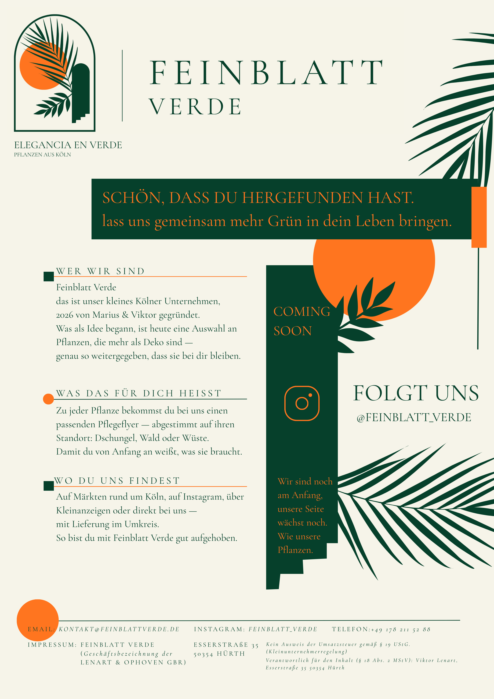

Elegancia en Verde. Kuratiert in Köln. Feinblatt Verde ist ein kleines Kölner Unternehmen, 2026 von Marius und Viktor gegründet. Wir suchen Pflanzen aus, die mehr als Deko sind — so weitergegeben, dass sie bei dir bleiben.
Zu jeder Pflanze bekommst du bei uns einen passenden Pflegeflyer, abgestimmt auf ihren Standort: Wald, Dschungel oder Wüste.
Du findest uns auf Märkten rund um Köln, auf Instagram, über Kleinanzeigen oder direkt bei uns, mit Lieferung im Umkreis.
Kontakt: kontakt@feinblattverde.de · Instagram: feinblatt.verde
Impressum: Feinblatt Verde (Geschäftsbezeichnung der GbR Lenart, Viktor und Ophoven, Marius), Esserstraße 35, 50354 Hürth. Kein Ausweis der Umsatzsteuer gemäß §19 UStG (Kleinunternehmerregelung). Verantwortlich für den Inhalt (§18 Abs. 2 MStV): Viktor Lenart, Esserstraße 35, 50354 Hürth.